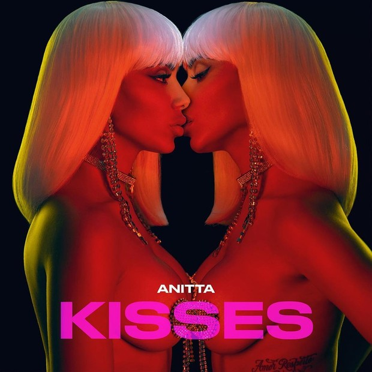

Lançamento:
5 de abril de 2019
Gênero(s):
Pop Latino - Reggaeton
Duração:
29:46
Idioma(s):
Espanhol - Inglês - Português
Gravadora:
Warner Music
Produção:
Umberto Tavares - Mãozinha - Tezzel - Supa Dups - Mambo Kings - DJ Luian - Kedin Maisonet - Henry Pulman - Francis Díaz - Ryan Ogren - Elvin Peña - Dimelo Flow - Alesso - Bigram Zayas - Sky - Pedro Dash - Marcelinho Ferraz - Dan Valbusa
Crítica Musical
Rachel Aroesti, do The Guardian, deu ao álbum três de cinco estrelas elogiando a personalidade de Anitta em algumas das músicas como "Banana" e afirmou que é um álbum "que parece mais um sinal agradável dos tempos do que uma proposição particularmente emocionante por direito próprio". Helder Maldonado do portal R7 deu uma crítica negativa ao álbum, dizendo que ele "mostra a artista enfileirando um clichê atrás do outro", e que a "sequência de músicas é tão parecida com tudo que já escutamos nas rádios pop desta década", que o ouvinte deveria "comemorar" o fato do álbum ser tão curto. Para Maldonado, o único diferencial do álbum estão nas faixas cantadas em português.